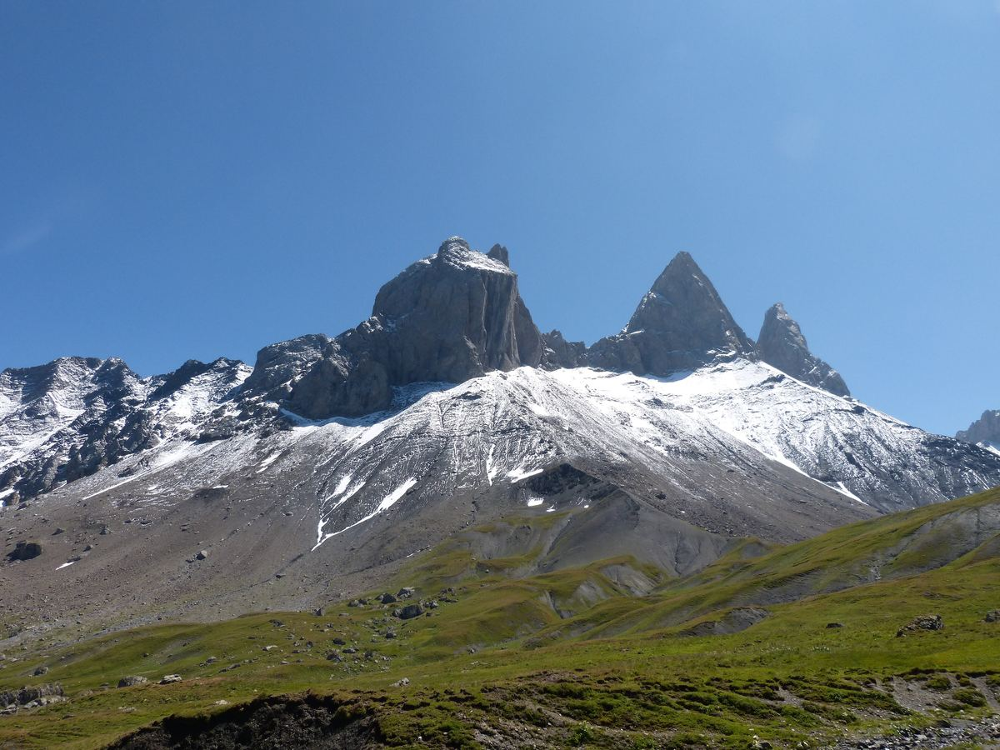

Aller au contenu
visorando
– refonte accessible, accueil
Menu
Trouver une randonnée
Carte des randonnées
Mes favoris
0
Accessibilité
Montrer les corrections RGAA
Projet de cours, sans lien avec le site officiel.
Chargement des randonnées…

Préparez-vous à conquérir de nouveaux sommets
Inscrivez-vous gratuitement